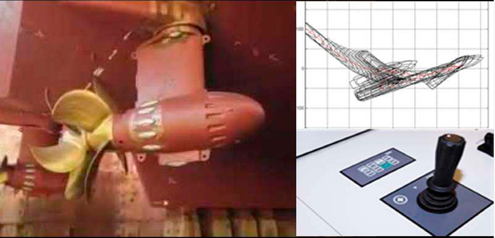

Технологии
- Трехэтапный план
- Функциональный подход
- Системная архитектура
- Автономная навигационная система
- Оптическая система анализа ситуационной обстановки
- Система координированного управления движением
- Расширение систем управления техническими средствами
- Пульт дистанционного управления
- Аппаратное обеспечение а-Нав
- Передача данных и кибербезопасность
- Мостиковый планшет
- Караванное управление
- Нормативное регулирование
Система
координированного управления движением
СКУ предназначена для управления упорами с помощью средств активного управления движением и пассивных рулей направления на основе команд, заданных АНС. В общем случае СКУ обеспечивает автоматическое удержание судна на заданном АНС курсе и относится к традиционным, хотя и пока еще мало распространенным системам управления курсом/траекторией движения судна. В силу этого в качестве СКУ в составе комплекса а-Навигации могут использоваться любые существующие на рынке системы управления курсом/траекторией движения судна.
Команды управления поступают на вычислительный прибор СКУ от АНС, обрабатываются c учетом математической модели конкретного судна и преобразуется в команды управления на конкретные исполнительные механизмы средств управления движением, которые отправляются через прибор сопряжения с бортовыми средствами дистанционного автоматизированного управления (ДАУ).